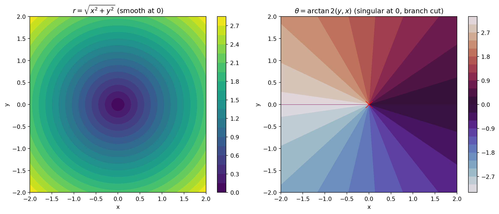
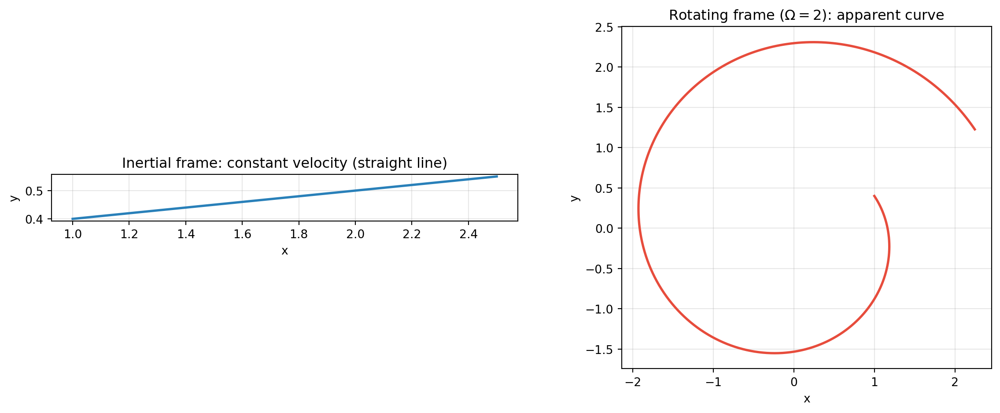
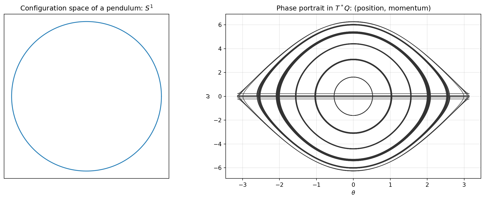

flowchart TD
A["Ch 1–2 · Newtonian core<br/>absolute space and time, inertial frames,<br/>point mass, superposition of forces, F = dp/dt"] --> B["Ch 3–4 · Conservation<br/>+ isolated system, + conservative force (U exists)"]
A --> C["Ch 5 · Oscillations<br/>+ small-amplitude linearization, + damping and driving"]
B --> D["Ch 6–7 · Variational / Lagrangian<br/>+ smooth functionals, + generalized coordinates,<br/>+ holonomic constraints do no virtual work"]
C --> H["Ch 11 · Coupled oscillators<br/>+ linearity, + normal modes"]
D --> E["Ch 8 · Central forces<br/>+ two-body reduction, + effective potential"]
D --> F["Ch 9 · Non-inertial frames<br/>− inertial frame: + centrifugal, Coriolis, Euler"]
D --> G["Ch 10 · Rigid bodies<br/>+ rigidity, + inertia tensor, + orientation DOF"]
D --> I["Ch 12 · Nonlinear mechanics & chaos<br/>− linearity: exact nonlinear, sensitive dependence"]
D --> J["Ch 13 · Hamiltonian<br/>+ Legendre convexity, + symplectic phase space"]
H --> K["Ch 14 · Scattering<br/>+ asymptotic free states, + cross sections"]
G --> M["Ch 16 · Continuum mechanics<br/>+ continuous media, + stress, + constitutive laws"]
A --> L["Ch 15 · Special relativity<br/>− absolute time and simultaneity, finite c"]
style A fill:#2980b9,color:#fff,stroke:#1a5276
style D fill:#27ae60,color:#fff,stroke:#1e8449
style J fill:#8e44ad,color:#fff,stroke:#6c3483
style L fill:#e74c3c,color:#fff,stroke:#b03a2e
style I fill:#e67e22,color:#fff,stroke:#ca6f1e
The Hidden Assumptions of Classical Mechanics: Affine Space, Spacetime, Coordinates, and Frames of Reference
What classical systems silently assume about space, time, coordinates, and observers — affine versus Euclidean versus vector spaces, Galilean spacetime, coordinate charts and frames, inertial and rotating reference frames, configuration and phase space, and the idealizations baked into every problem statement
Physics
Classical Mechanics
Mathematical Physics
Geometry
Frames of Reference
A comprehensive account of the assumptions underlying classical mechanical systems and problems. It distinguishes affine space from vector and Euclidean space and explains why positions are points while displacements are vectors; describes the spacetime assumptions of absolute time and space, Galilean spacetime as a fibre bundle over time, and the relativity of simultaneity and velocity; treats coordinate systems as maps with charts, singularities, active versus passive transformations, and frame fields; distinguishes inertial from non-inertial frames and derives the centrifugal, Coriolis, and Euler fictitious forces; develops configuration space, the tangent and cotangent bundles, state space, and phase space; catalogs the idealizations in problem statements (point masses, rigid bodies, conservative forces, smoothness, determinism, isolation); explains what breaks when they fail (relativity, quantum mechanics, chaos, dissipation, non-holonomic constraints); and includes an executable Python laboratory on affine arithmetic, coordinate transformations, the Coriolis effect, pendulum phase portraits, and Galilean invariance.
Every classical mechanics problem begins with unstated assumptions: that space is a certain kind of geometric object, that time is absolute, that we can lay down coordinates, that some frames are “inertial,” and that the system is smooth, deterministic, and isolated. These assumptions are so natural that they are invisible — and knowing them is what separates someone who can solve problems from someone who understands why the solutions mean anything.
This article makes the stage explicit.
TipCompanion Treatises in this Series
1 Why Assumptions Matter
Classical mechanics is not a description of reality; it is a model defined on a specific geometric stage with specific idealizations. Lagrange’s equations, Newton’s laws, and Hamilton’s equations all presuppose:
- A structure for space (where positions live).
- A structure for time (what “simultaneous” and “duration” mean).
- A rule for relating observers (frames of reference).
- A way to label configurations (coordinates).
- Idealizations of the physical system (point masses, rigidity, smoothness, isolation).
Change any of these and the same equations describe a different theory. This is why “assumptions” are the real content of a mechanics course.
2 Spaces: Set, Vector, Affine, Euclidean, Manifold
These words are not interchangeable, and classical mechanics uses all of them.
| Structure | What it has | What it lacks |
|---|---|---|
| Set | elements | any operation |
| Vector space | addition, scaling, a distinguished origin \(\mathbf 0\) | notion of distance or angle |
| Affine space | points, and free vectors acting as translations | a distinguished origin |
| Euclidean space | affine space + inner product | — (has distance and angle) |
| Metric space | distance function | vector operations |
| Manifold | locally Euclidean coordinates | global linear structure |
2.1 The Affine Point: Positions Are Not Vectors
In an affine space \(\mathbb{A}\), adding two points is meaningless; the meaningful operations are:
- A difference of points \(Q-P\) is a vector (a displacement).
- A point plus a vector \(P+\mathbf v\) is a point.
- An affine combination \((1-t)P+tQ\) is a point (the straight line through \(P\) and \(Q\)).
This is exactly the structure of positions in space. Saying “the particle is at position \(\mathbf r\)” quietly identifies a point with a vector only after choosing an origin. Displacements, velocities, and forces are genuine vectors; positions are points.
In practice we choose an origin \(O\) and write \(\mathbf r = P - O\), which is why the distinction is usually invisible. But it matters: a translation of the origin changes position vectors while leaving physical statements unchanged.
2.2 Euclidean Space and the Metric
Adding an inner product to the underlying vector space makes the affine space Euclidean: we can measure distances and angles. The metric \(\delta_{ij}\) (Cartesian) is what makes “length” and “perpendicular” meaningful, and it is what curvilinear coordinates will express through the metric tensor \(g_{ij}\).
2.3 Configuration Space Is a Manifold, Not Necessarily Linear
The set of all configurations of a mechanical system is the configuration space \(Q\). For free particles it is \(\mathbb{R}^{3N}\); for a pendulum it is a circle \(S^1\); for a rigid body it is \(\mathbb{R}^3\times SO(3)\); for a double pendulum it is a torus \(S^1\times S^1\). These are manifolds: locally Euclidean, globally curved and often topologically nontrivial.
3 The Assumptions About Time and Spacetime
3.1 Absolute Time and Absolute Space (Newton)
Newton assumed:
- Absolute time flows uniformly, the same for all observers.
- Absolute space exists, and absolute motion (acceleration relative to it) is physically real — the argument of the rotating bucket.
These assumptions are strong and were contested from the start.
3.2 Galilean Spacetime
The modern formulation replaces “absolute space” with a subtler structure. Galilean spacetime is a fibre bundle over time:
- Time is a 1-dimensional affine line \(\mathbb{R}\).
- Each instant \(t\) carries a copy of Euclidean 3-space (the simultaneity slice).
- There is no canonical identification between different time slices, so absolute velocity is meaningless, but relative velocity and acceleration are meaningful.
- Simultaneity is absolute: all observers agree on which events are simultaneous.
This is the precise structure preserved by Galilean transformations.
3.3 Relationalism vs Absolutism
Leibniz and Mach objected that only relative motion is observable; Newton’s bucket suggested absolute rotation. The debate shaped general relativity, where spacetime is dynamical and absolute space and time both dissolve. Classical mechanics takes the pragmatic middle: an equivalence class of inertial frames, with no preferred one.
4 Coordinate Systems, Charts, and Frames
4.1 Coordinates Are Maps
A coordinate system is a map \(\varphi: U\to\mathbb{R}^n\) from a region of space (or configuration space) to \(\mathbb{R}^n\) — not a physical grid. A collection of overlapping charts covering the space is an atlas, and the change-of-coordinates between overlapping charts is a transition map. Curvature and topology show up in the failure of a single chart to cover everything.
Consequences:
- Coordinate singularities are artifacts of the chart, not of space. Polar coordinates are singular at the origin; spherical coordinates are singular on the polar axis; latitude/longitude is singular at the poles.
- The metric tensor \(g_{ij}\) encodes distances in any chart: \(ds^2 = g_{ij}\,dq^i\,dq^j\). In Cartesian coordinates \(g_{ij}=\delta_{ij}\); in spherical coordinates \(g=\operatorname{diag}(1,r^2,r^2\sin^2\theta)\).
- Generalized coordinates \(q^i\) need not be lengths or angles at all; they are just labels on the configuration manifold.
4.2 Active vs Passive Transformations
- A passive transformation changes the coordinate labels while the physical situation is fixed (re-describing).
- An active transformation moves the physical object while coordinates are fixed.
Both must be distinguished when discussing symmetry: a symmetry is an active transformation leaving the physics invariant, which then implies a conservation law.
4.3 Frames, Bases, and Frame Fields
A frame at a point is a basis of the vector space (e.g., the Cartesian unit vectors \(\hat x,\hat y,\hat z\)). Unlike constant Cartesian frames, moving frames vary from point to point — the basis of curvilinear coordinates (polar, spherical) or of a body moving through space. The Frenet–Serret frame \((\mathbf T,\mathbf N,\mathbf B)\) of a curve is the canonical example, and its turning is governed by curvature and torsion. Frame fields (tetrads) generalize this to curved spacetime.
5 Frames of Reference and Fictitious Forces
A frame of reference is a choice of origin plus an orientation (and possibly a state of motion). The crucial distinction:
- Inertial frame: a frame in which a free particle moves in a straight line at constant velocity (Newton’s first law), equivalently one in which Newton’s second law holds with no fictitious forces.
- Non-inertial frame: accelerating and/or rotating relative to an inertial frame.
5.1 Galilean Transformations
Two inertial frames related by a constant relative velocity \(\mathbf V\) are connected by the Galilean transformation \[ \mathbf r' = \mathbf r - \mathbf V t,\qquad t' = t. \] Velocities add (\(\mathbf v' = \mathbf v - \mathbf V\)), accelerations are invariant, and so is Newton’s second law. Time is absolute. This is the principle of Galilean relativity: no mechanical experiment distinguishes inertial frames.
5.2 Rotating Frames and Fictitious Forces
In a frame rotating with angular velocity \(\boldsymbol\Omega\), Newton’s law acquires three fictitious (inertial) terms: \[ m\mathbf a_{\text{rot}} = \mathbf F_{\text{real}} \underbrace{- 2m\,\boldsymbol\Omega\times\mathbf v_{\text{rot}}}_{\text{Coriolis}} \underbrace{- m\,\boldsymbol\Omega\times(\boldsymbol\Omega\times\mathbf r)}_{\text{centrifugal}} \underbrace{- m\,\dot{\boldsymbol\Omega}\times\mathbf r}_{\text{Euler}}. \] These are not forces from any physical interaction; they are coordinate effects of insisting on a rotating description. The Coriolis term deflects projectiles, cyclones, and Foucault pendulums; the centrifugal term appears as an outward push; the Euler term appears when the rotation rate changes.
Galilean invariance holds only for inertial frames. Non-inertial frames are legitimate, but one must add fictitious forces or accept that Newton’s laws take their modified form.
6 Configuration Space, Tangent Bundle, and Phase Space
A mechanical system’s geometry is organized by a hierarchy of spaces:
| Space | Symbol | Points are | Dimension |
|---|---|---|---|
| Configuration space | \(Q\) | positions / configurations | \(n\) DOF |
| Tangent bundle (state space) | \(TQ\) | positions and velocities \((q,\dot q)\) | \(2n\) |
| Cotangent bundle (phase space) | \(T^*Q\) | positions and momenta \((q,p)\) | \(2n\) |
- \(TQ\) is where Lagrangian mechanics lives (\(L:TQ\to\mathbb R\)).
- \(T^*Q\) is where Hamiltonian mechanics lives (\(H:T^*Q\to\mathbb R\)), and \(p_i = \partial L/\partial \dot q_i\) is the Legendre transform taking velocities to momenta.
- Constraints reduce the configuration space: a holonomic constraint defines a submanifold of \(Q\) (e.g., a bead on a wire has \(Q=S^1\)). A non-holonomic constraint (rolling without slipping) does not reduce \(Q\) to a submanifold and must be handled with Lagrange multipliers or a distribution.
Phase space adds structure a bare manifold lacks: the symplectic form \(\omega=\sum_i dq^i\wedge dp_i\), incompressibility (Liouville’s theorem), and Poisson brackets. See the Hamiltonian chapter.
7 The Idealizations in Every Problem Statement
A typical problem (“a block slides down a frictionless incline”) assumes, silently:
- Point masses / rigid bodies. Objects have no internal structure, or are perfectly rigid.
- Primitive mass and force. Mass is constant; forces superpose and satisfy Newton’s third law.
- Conservative forces (for energy methods): a potential \(U\) exists (\(\mathbf F=-\nabla U\)), or the system is isolated.
- Smoothness. Positions, velocities, and forces are sufficiently differentiable for derivatives and Taylor expansions to exist.
- Determinism. Given exact initial conditions, the trajectory is unique (Lipschitz/Picard–Lindelöf hypotheses).
- Isolation / ideal constraints. Frictionless, massless strings and pulleys; constraints do zero virtual work.
- Classical regime. Speeds \(\ll c\), actions \(\gg\hbar\), macroscopic scales.
- Fixed geometry. Space and time are flat and non-dynamical; rulers and clocks are ideal.
- Linearity when convenient. Small oscillations are linearized, ignoring anharmonic terms.
7.1 What Breaks When the Assumptions Fail
| Assumption dropped | New theory / phenomenon |
|---|---|
| Absolute time, Galilean relativity | Special/general relativity |
| Definite trajectories, \(\gg\hbar\) | Quantum mechanics |
| Exact initial conditions | Chaos, sensitive dependence, unpredictability |
| Conservation (friction, dissipation) | Thermodynamics, non-time-reversible dynamics |
| Holonomic constraints | Non-holonomic mechanics (rolling, distributional constraints) |
| Rigid bodies, point masses | Continuum mechanics, elasticity, fluid dynamics |
| Flat, fixed spacetime | General relativity (dynamical geometry) |
The lesson: classical mechanics is the \(\hbar\to0\), \(v/c\to0\), smooth, isolated, deterministic limit of a larger physics. Knowing the assumptions tells you exactly where it stops being valid.
8 How the Model Changes Across the Taylor Chapters
Taylor’s Classical Mechanics is a book about relaxing and adding assumptions, chapter by chapter. The tree below traces that evolution: every branch adds a hypothesis (+) or removes one (−).
| Chapter(s) | Assumption added (+) or relaxed (−) | Payoff / what changes |
|---|---|---|
| 1–2 Newtonian core | + absolute space & time, + inertial frame, + point mass, + force superposition | \(\mathbf F=d\mathbf p/dt\); projectiles, central fields |
| 3–4 Momentum & energy | + isolated system, + conservative force (\(U\) exists) | conservation of \(\mathbf P\), \(\mathbf L\), \(E\) |
| 5 Oscillations | + small-amplitude linearization, + damping, + driving | harmonic motion, resonance, beats |
| 6–7 Variational / Lagrangian | + smooth functionals, + generalized coordinates, + holonomic constraints do no virtual work | Euler–Lagrange; constraint forces eliminated |
| 8 Central forces | + two-body reduction, + effective potential | Kepler orbits, scattering from a center |
| 9 Non-inertial frames | − inertial frame | fictitious forces: centrifugal, Coriolis, Euler |
| 10 Rigid bodies | + rigidity, + inertia tensor, + orientation DOF | Euler’s equations, gyroscopes |
| 11 Coupled oscillators | + linearity, + normal modes | normal coordinates, superposition |
| 12 Nonlinear & chaos | − linearity | sensitive dependence, deterministic unpredictability |
| 13 Hamiltonian | + Legendre convexity, + symplectic structure | Hamilton’s equations, Liouville, Poisson brackets |
| 14 Scattering | + asymptotic free states | cross sections, collision theory |
| 15 Special relativity | − absolute time & simultaneity, finite \(c\) | Lorentz transformations, four-vectors |
| 16 Continuum mechanics | + continuous media, + stress, + constitutive laws | elasticity, fluids, field theories |
Reading the tree top-down: the blue node is the founding geometry (absolute space/time, inertial frames, point masses), the green node is where coordinates and constraints become the organizing idea, the purple node is the phase-space reformulation, the orange node is where linearity is abandoned, and the red node is where absolute time itself is abandoned. Each arrow is a theorem’s hypothesis being added or dropped.
9 Formalizing the Assumptions in Lean 4
A proof assistant makes assumptions impossible to hide. In Lean 4 with Mathlib, every structure discussed above — affine space, Euclidean space, manifold, smoothness, Lipschitz continuity — becomes an explicit type, typeclass instance, or hypothesis. Omit one and the terms you try to write simply do not type-check. This is the deepest test of whether you really understand the assumptions.
9.1 Points vs Vectors: The Torsor
Mathlib formalizes an affine space as a torsor: the point type P carries an action of the vector space V, with the operations +ᵥ (point displaced by a vector) and -ᵥ (difference of two points).
import Mathlib
-- V : the vector space of displacements; P : the affine space of positions
variable {V : Type*} [NormedAddCommGroup V] [NormedSpace ℝ V]
variable {P : Type*} [PseudoMetricSpace P] [NormedAddTorsor V P]
variable (p q : P) -- two POINTS
#check (q -ᵥ p) -- : V (a displacement -- a vector)
#check (q -ᵥ p) +ᵥ p -- : P (point + vector = point)
-- p + q is a TYPE ERROR: points cannot be added, exactly the affine ruleThe distinction that is “usually invisible” in physics is here a hard typing rule: p + q has no instance, while q -ᵥ p : V and v +ᵥ p : P do. Choosing an origin is literally choosing a basepoint p₀ : P, after which p ↦ p -ᵥ p₀ : V.
9.2 Euclidean Space, Frames, and Coordinates
-- n-dimensional Euclidean space: a function type carrying the Pi inner product
abbrev Euc (n : ℕ) := EuclideanSpace ℝ (Fin n)
example : InnerProductSpace ℝ (Euc 3) := inferInstance
-- a frame is a basis; coordinates are the coefficient map
variable {b : Basis (Fin 3) ℝ (Euc 3)} (v : Euc 3)
#check b.repr v -- the coordinates of v in the frame bA change of coordinates is a change of basis, and the metric tensor is g i j := ⟪b i, b j⟫. The physics is invariant under the change of b — a theorem, not an assumption.
9.3 Time, Trajectories, and Derivatives
variable (γ : ℝ → Euc 3) -- a trajectory: time -> configuration
#check deriv γ -- velocity : ℝ → Euc 3
#check deriv (deriv γ) -- acceleration
#check ContDiff ℝ 2 γ -- the smoothness hypothesis, as a Prop
#check DifferentiableAt ℝ γ 0deriv does not exist until you have supplied [NormedAddCommGroup] and [NormedSpace ℝ]; the analytic assumptions of mechanics are the typeclass context of the theory.
9.4 Newton’s Law as a Differential Equation
variable (F : Euc 3 → Euc 3) (U : Euc 3 → ℝ) (m : ℝ)
-- force is a VECTOR FIELD (a vector assigned to each point); potential is a scalar field
def IsNewtonian (γ : ℝ → Euc 3) : Prop :=
∀ t, m • deriv (deriv γ) t = F (γ t)
-- conservative force law as a definition:
#check (fun x => - gradient U x) -- F = -∇UNote that IsNewtonian is only meaningful in inertial coordinates: the frame assumption is not in the type of F, so it must be stated in the surrounding theorem. (This is a nice illustration of an assumption that formalization exposes rather than enforces automatically.)
9.5 Configuration Manifolds and Bundles
variable {𝕜 E H M : Type*}
[NontriviallyNormedField 𝕜] [NormedAddCommGroup E] [NormedSpace 𝕜 E]
[TopologicalSpace H] (I : ModelWithCorners 𝕜 E H)
[TopologicalSpace M] [ChartedSpace H M]
#check TangentSpace -- T_x Q at a point
#check TangentBundle -- the state space TQ
#check CotangentSpace -- the phase space fibre T*_x Q
#check chartAt -- a coordinate chart as a partial homeomorphismThe configuration space is a ChartedSpace / manifold, the state space is TangentBundle, and the phase space is the cotangent bundle — the same geometry as before, now a type.
9.6 Determinism, Smoothness, and Constraints
#check IsPicardLindelof -- existence AND uniqueness need a Lipschitz vector field
#check IsSubmanifold -- a holonomic constraint is a submanifold of Q
#check AffineIsometryEquiv -- an inertial change of frame preserves all distances- Determinism is not automatic: without a Lipschitz hypothesis, the ODE existence–uniqueness theorem does not apply, and trajectories need not be unique.
- Holonomic constraints are
IsSubmanifold; the dimension drop3N → 3N−kbecomes a statement about tangent spaces. - Galilean boosts are affine isometries (
AffineIsometryEquiv), making the relativity of inertial frames a theorem about a group action.
9.7 A Translation Table
| Concept | Lean 4 / Mathlib encoding |
|---|---|
| displacement (vector) | v : V, [NormedAddCommGroup V] [NormedSpace ℝ V] |
| position (point) | p : P, [NormedAddTorsor V P] |
| move / difference | v +ᵥ p : P, q -ᵥ p : V |
| frame | Basis ι ℝ E |
| coordinates / chart | b.repr, chartAt, PartialHomeomorph |
| trajectory | γ : ℝ → E |
| velocity / acceleration | deriv γ, deriv (deriv γ) |
| smoothness | ContDiff ℝ n f |
| force / potential | F : E → E, U : E → ℝ, gradient U |
| manifold | ModelWithCorners, [ChartedSpace H M] |
| tangent / cotangent space | TangentSpace, CotangentSpace |
| constraint | Set M, IsSubmanifold |
| inertial frame change | AffineIsometryEquiv |
| determinism | IsPicardLindelof + ODE existence/uniqueness |
9.8 What Formalization Reveals
- Assumptions become types. The affine/vector distinction is enforced by
+ᵥvs+; no smoothness means noderiv; no Lipschitz means no uniqueness. - Gauge freedom is a theorem. That
LandL + dF/dtyield identical Euler–Lagrange equations is statable and provable — the “the Lagrangian represents nothing in itself” point, made rigorous. - The Lagrangian is a function on the tangent bundle:
L : TangentBundle I Q → ℝ, or locallyE × E → ℝ; the cotangent bundle and its symplectic form are the Hamiltonian stage. - Gaps remain. Mathlib has rich analysis, manifold, and Lie-group libraries, but no comprehensive classical-mechanics library: the variational calculus on manifolds, the Euler–Lagrange and Hamilton formalisms, and symplectic geometry are only partially developed. Formalizing even “a block slides down a frictionless incline” means assembling those pieces — which is itself a way of seeing the assumptions.
Caveat: Mathlib’s API evolves between releases; the names above are illustrative of the current design rather than a guarantee for a particular version.
9.9 A Short Guide: Converting Any CM Problem into Lean 4
Formalizing a classical-mechanics problem follows a fixed recipe. The steps are the assumptions, made explicit.
Step 1 — Choose the configuration space as a type. | Physical system | Lean type | |—|—| | point in \(\mathbb{R}^n\) | EuclideanSpace ℝ (Fin n) | | pendulum (angle) | ℝ (or Circle for angles mod \(2\pi\)) | | rigid body | EuclideanSpace ℝ (Fin 3) × SO (Fin 3) | | bead on a surface | Submanifold / a manifold M with [ChartedSpace H M] | | \(N\) particles with constraints | a manifold, or Q with a Submanifold |
Step 2 — Declare the configuration variable. A state is a term q : Q; a chart φ : PartialHomeomorph M E supplies the coordinates.
Step 3 — Declare the trajectory and its smoothness. γ : ℝ → Q with ContDiff ℝ 2 γ (or ContMDiff ℝ I n γ on a manifold). Differentiability is a hypothesis, not a default.
Step 4 — Define the Lagrangian. Locally L : Q → Q → ℝ (position, velocity), globally L : TangentBundle I Q → ℝ. The standard choice is L x v = (m / 2) * ‖v‖ ^ 2 - U x.
Step 5 — Write the equations of motion as a predicate. The Euler–Lagrange condition is a Prop; in a chart it reads schematically \[\texttt{IsEL}\ L\ \gamma \iff \forall t,\ \frac{\partial L}{\partial x}(\gamma t, \dot\gamma t) = \frac{d}{dt}\frac{\partial L}{\partial v}(\gamma t, \dot\gamma t).\]
Step 6 — State the theorem you care about (existence, uniqueness, conservation, Newton equivalence) and supply the hypotheses it needs: ContDiff, LipschitzWith, positivity of the mass matrix, convexity of U, etc.
Step 7 — Connect to the variational principle. Prove or assume that IsEL L γ is equivalent to stationarity of the action S γ = ∫ t, L (γ t) (deriv γ t), using HasFDerivAt for the first variation.
A skeleton template (names illustrative):
import Mathlib
-- Step 1–2: configuration space and the Lagrangian
abbrev Q := EuclideanSpace ℝ (Fin 1)
variable (m : ℝ) (U : Q → ℝ) (hU : ContDiff ℝ 2 U)
noncomputable def L (x v : Q) : ℝ := (m / 2) * ‖v‖ ^ 2 - U x
-- Step 3: trajectory and smoothness
variable (γ : ℝ → Q) (hγ : ContDiff ℝ 2 γ)
-- Step 5: the equations of motion (schematic Euler-Lagrange predicate)
def IsEL : Prop :=
∀ t, fderiv ℝ (fun x => L x (deriv γ t)) (γ t) 1
= deriv (fun s => fderiv ℝ (fun v => L (γ s) v) (deriv γ s)) t
-- Step 6: the theorem you would state (Newton's law in inertial coordinates)
def IsNewtonian : Prop :=
∀ t, m • deriv (deriv γ) t = - gradient U (γ t)
-- Step 7: for the harmonic case, IsEL γ ↔ IsNewtonian γ (to be proved)Checklist — what you must supply at each step: - [ ] Configuration type and, if constrained, the constraint as a Submanifold. - [ ] The coordinate chart(s) and their domains (watch for coordinate singularities). - [ ] A smooth trajectory (ContDiff ℝ n γ). - [ ] The Lagrangian (and, for rheonomic constraints, its explicit t). - [ ] The equations of motion as a predicate. - [ ] Every hypothesis the theorem needs (Lipschitz, positivity, boundary conditions).
The value of the exercise is that you cannot cheat: any assumption you have been making implicitly becomes a term you must write down, a hypothesis you must assume, or a proof obligation you must discharge. See Chapter 6, Chapter 7, and Chapter 13 for the concepts formalized here, each with its own Lean section.
9.10 Existing Lean 4 Libraries and Open-Source Formalizations
Most of the foundational structures Taylor’s chapters rely on already exist in Lean 4; a dedicated mechanics layer on top is what is mostly missing.
| Topic (Taylor chapter) | Lean 4 resource | Status |
|---|---|---|
| affine space / torsors (1–2) | NormedAddTorsor, AffineSpace, AffineIsometryEquiv |
Mathlib |
| Euclidean spaces, inner products, frames | EuclideanSpace, InnerProductSpace, Basis |
Mathlib |
| derivatives and smoothness (5–7) | HasFDerivAt, fderiv, deriv, ContDiff, ContMDiff |
Mathlib |
| manifolds, tangent/cotangent bundles (7, 10, 13) | ModelWithCorners, ChartedSpace, TangentSpace, TangentBundle, CotangentSpace |
Mathlib |
| ODE existence/uniqueness, Picard–Lindelöf (1, 12) | IsPicardLindelof, ODE solution theory |
Mathlib |
| Lie groups and smooth actions (10, 13) | LieGroup, LieAlgebra, ContMDiff |
Mathlib; PhysLean |
rotations, SO(3), quaternions (10) |
Matrix.SpecialOrthogonalGroup, quaternions |
Mathlib |
| measure and integration (statistical mechanics, probability) | MeasureTheory, Measure, ProbabilityTheory |
Mathlib |
| Lorentz group and Minkowski space (15) | LorentzGroup |
Mathlib; PhysLean |
| quantum mechanics (motivation for 13) | Hilbert spaces, operators, spectral theory | Mathlib; quantum-information projects |
| classical mechanics proper (5–13) | no comprehensive library | gap |
| variational calculus / Euler–Lagrange operator | not available off the shelf | gap |
| symplectic and Poisson geometry (13) | only the matrix group SymplecticGroup; no symplectic manifold theory |
research-level gap |
The principal projects.
- Mathlib (
leanprover-community/mathlib4) is the substrate: affine/torsor geometry, Euclidean and normed spaces, Fréchet calculus, manifolds and bundles, Lie theory, ODE theory, and measure theory all live here. Almost every type in the conversion recipe above is a Mathlib type. - PhysLean (
github.com/HEPLean/PhysLean) is the main Lean 4 physics formalization project, aiming to formalize fundamental physics (spacetime, classical and quantum fields). It is the natural place from which to extend toward Taylor’s material, though its emphasis is modern fundamental physics rather than a textbook course in classical mechanics. - Quantum-information projects (community Lean 4 libraries formalizing quantum computation and information) build on Mathlib’s Hilbert-space and operator theory; these matter for the spectral and phase-space ideas of Chapter 13.
- Prior art outside Lean: HOL Light and Isabelle/HOL (via the Archive of Formal Proofs) have formalized multivariable calculus and some physics/mechanics, and Coq/MathComp has substantial analysis. The Lean 4 ecosystem is the most active current target, but the coverage claims and project names change quickly.
Practical implication. Formalizing Taylor Chapters 6–7 means (1) reusing Mathlib’s affine/Euclidean/calculus/manifold APIs, (2) building the variational-calculus and Euler–Lagrange layer, which is not yet provided, and (3) for Chapter 13 building the symplectic/Poisson structure, currently a research-level gap. PhysLean and the quantum-information libraries supply adjacent pieces. In other words, the assumptions are formalized already; the mechanics built on top of them is the open work.
10 Laboratory: The Assumptions, Made Concrete
10.1 Affine Space: Points Versus Vectors
Code
import numpy as np
P = np.array([1.0, 2.0, 0.0]) # a point (position)
Q = np.array([4.0, 6.0, 0.0]) # a point
O = np.array([0.0, 0.0, 0.0]) # chosen origin
disp = Q - P # a VECTOR (displacement)
mid = 0.5 * P + 0.5 * Q # affine combination -> a POINT
new = P + 2.0 * disp # point + vector -> a POINT
print("=== AFFINE vs VECTOR ===")
print(f" displacement Q-P = {disp.tolist()} (a vector, origin-independent)")
print(f" midpoint = {mid.tolist()} (a point)")
print(f" P + 2(Q-P) = {new.tolist()} (a point)")
print(" Adding two POINTS (P+Q) has no meaning until an origin is chosen:")
print(f" P+Q = {(P+Q).tolist()} -- only meaningful relative to origin O={O.tolist()}")
shift = np.array([10.0, 10.0, 0.0])
print(f" after shifting the origin by {shift.tolist()}:")
print(f" positions change: Q-P is still {((Q+shift)-(P+shift)).tolist()} (vector unchanged)")
print(" positions are points; displacements, velocities, and forces are vectors.")=== AFFINE vs VECTOR ===
displacement Q-P = [3.0, 4.0, 0.0] (a vector, origin-independent)
midpoint = [2.5, 4.0, 0.0] (a point)
P + 2(Q-P) = [7.0, 10.0, 0.0] (a point)
Adding two POINTS (P+Q) has no meaning until an origin is chosen:
P+Q = [5.0, 8.0, 0.0] -- only meaningful relative to origin O=[0.0, 0.0, 0.0]
after shifting the origin by [10.0, 10.0, 0.0]:
positions change: Q-P is still [3.0, 4.0, 0.0] (vector unchanged)
positions are points; displacements, velocities, and forces are vectors.10.2 Coordinate Systems and Their Singularities
Code
import numpy as np
import matplotlib.pyplot as plt
x = np.linspace(-2, 2, 400); y = np.linspace(-2, 2, 400)
X, Y = np.meshgrid(x, y)
R = np.hypot(X, Y); TH = np.arctan2(Y, X)
fig, axes = plt.subplots(1, 2, figsize=(12.5, 5))
c1 = axes[0].contourf(X, Y, R, levels=20, cmap="viridis")
axes[0].set_title(r"$r=\sqrt{x^2+y^2}$ (smooth at 0)"); plt.colorbar(c1, ax=axes[0])
c2 = axes[1].contourf(X, Y, TH, levels=20, cmap="twilight")
axes[1].set_title(r"$\theta=\arctan2(y,x)$ (singular at 0, branch cut)")
axes[1].plot(0, 0, "rx", ms=12); plt.colorbar(c2, ax=axes[1])
for ax in axes:
ax.set_aspect("equal"); ax.set_xlabel("x"); ax.set_ylabel("y")
plt.tight_layout(); plt.show()
print("=== METRIC IN DIFFERENT CHARTS ===")
print(" Cartesian: ds^2 = dx^2 + dy^2 g = diag(1, 1)")
print(" Polar : ds^2 = dr^2 + r^2 dθ^2 g = diag(1, r^2)")
print(" Spherical: ds^2 = dr^2 + r^2 dθ^2 + r^2 sin^2θ dφ^2")
print(" the components of g change with the chart; the geometry does not.")
=== METRIC IN DIFFERENT CHARTS ===
Cartesian: ds^2 = dx^2 + dy^2 g = diag(1, 1)
Polar : ds^2 = dr^2 + r^2 dθ^2 g = diag(1, r^2)
Spherical: ds^2 = dr^2 + r^2 dθ^2 + r^2 sin^2θ dφ^2
the components of g change with the chart; the geometry does not.10.3 Inertial vs Rotating Frames (Coriolis as a Coordinate Effect)
Code
import numpy as np
import matplotlib.pyplot as plt
Omega, T = 2.0, 3.0
t = np.linspace(0, T, 600)
# inertial frame: free particle, constant velocity
x_i = 1.0 + 0.5 * t
y_i = 0.4 + 0.05 * t
# coordinates of the same particle in a frame rotating by Omega*t
x_r = np.cos(Omega*t) * x_i + np.sin(Omega*t) * y_i
y_r = -np.sin(Omega*t) * x_i + np.cos(Omega*t) * y_i
fig, axes = plt.subplots(1, 2, figsize=(12.5, 5))
axes[0].plot(x_i, y_i, color="#2980b9", lw=2)
axes[0].set_title("Inertial frame: constant velocity (straight line)")
axes[1].plot(x_r, y_r, color="#e74c3c", lw=2)
axes[1].set_title(r"Rotating frame ($\Omega=2$): apparent curve")
for ax in axes:
ax.set_aspect("equal"); ax.grid(alpha=0.3); ax.set_xlabel("x"); ax.set_ylabel("y")
plt.tight_layout(); plt.show()
print("=== FICTITIOUS FORCES ARE COORDINATE EFFECTS ===")
print(" a = 0 in the inertial frame, yet the rotating-frame trajectory curves.")
print(" Newton's law in the rotating frame: ma = F - 2m Ω×v - m Ω×(Ω×r)")
print(" Coriolis : -2m Ω×v centrifugal : -m Ω×(Ω×r)")
=== FICTITIOUS FORCES ARE COORDINATE EFFECTS ===
a = 0 in the inertial frame, yet the rotating-frame trajectory curves.
Newton's law in the rotating frame: ma = F - 2m Ω×v - m Ω×(Ω×r)
Coriolis : -2m Ω×v centrifugal : -m Ω×(Ω×r)10.4 Configuration Space and Phase Space of a Pendulum
Code
import numpy as np
from scipy.integrate import solve_ivp
import matplotlib.pyplot as plt
g, L = 9.81, 1.0
def pendulum(t, y):
th, om = y
return [om, -(g / L) * np.sin(th)]
fig, axes = plt.subplots(1, 2, figsize=(13, 5))
tau = np.linspace(0, 2*np.pi, 200)
axes[0].plot(np.cos(tau), np.sin(tau), color="#2980b9")
axes[0].set_aspect("equal"); axes[0].set_title(r"Configuration space of a pendulum: $S^1$")
axes[0].set_xticks([]); axes[0].set_yticks([])
for th0 in np.linspace(-np.pi, np.pi, 13):
sol = solve_ivp(pendulum, [0, 30], [th0, 0.0], t_eval=np.linspace(0, 30, 2000))
th = (sol.y[0] + np.pi) % (2*np.pi) - np.pi
axes[1].plot(th, sol.y[1], lw=0.8, color="#333")
axes[1].set_xlabel(r"$\theta$"); axes[1].set_ylabel(r"$\omega$")
axes[1].set_title(r"Phase portrait in $T^*Q$: (position, momentum)")
axes[1].grid(alpha=0.3)
plt.tight_layout(); plt.show()
print("=== SPACES OF A MECHANICAL SYSTEM ===")
print(" configuration space Q : positions (pendulum: S^1, n=1)")
print(" tangent bundle TQ : (q, qdot) (Lagrangian mechanics)")
print(" cotangent bundle T*Q : (q, p) (Hamiltonian mechanics)")
print(" a double pendulum has Q = S^1 x S^1 (a torus), so n = 2 and dim(T*Q) = 4.")
=== SPACES OF A MECHANICAL SYSTEM ===
configuration space Q : positions (pendulum: S^1, n=1)
tangent bundle TQ : (q, qdot) (Lagrangian mechanics)
cotangent bundle T*Q : (q, p) (Hamiltonian mechanics)
a double pendulum has Q = S^1 x S^1 (a torus), so n = 2 and dim(T*Q) = 4.10.5 Galilean Invariance of a Collision
Code
import numpy as np
def collide(m1, m2, u1, u2):
# 1D perfectly elastic collision
v1 = ((m1 - m2)*u1 + 2*m2*u2) / (m1 + m2)
v2 = ((m2 - m1)*u2 + 2*m1*u1) / (m1 + m2)
return v1, v2
m1, m2, u1, u2 = 1.0, 2.0, 3.0, -1.0
v1, v2 = collide(m1, m2, u1, u2)
P = m1*u1 + m2*u2; E = 0.5*m1*u1**2 + 0.5*m2*u2**2
print("=== LAB FRAME ===")
print(f" v1={v1:.3f}, v2={v2:.3f}; P={m1*v1+m2*v2:.3f} (was {P:.3f}), E={0.5*m1*v1**2+0.5*m2*v2**2:.3f} (was {E:.3f})")
V = 5.0 # boost to another inertial frame
u1b, u2b = u1 - V, u2 - V
v1b, v2b = collide(m1, m2, u1b, u2b)
Pb = m1*v1b + m2*v2b
print("=== BOOSTED FRAME (moving at V=5) ===")
print(f" v1={v1b:.3f}, v2={v2b:.3f}; P={Pb:.3f} (was {m1*u1b+m2*u2b:.3f})")
print(" velocities differ but the conservation laws and the physics are identical:")
print(" Galilean relativity: inertial frames are physically equivalent.")=== LAB FRAME ===
v1=-2.333, v2=1.667; P=1.000 (was 1.000), E=5.500 (was 5.500)
=== BOOSTED FRAME (moving at V=5) ===
v1=-7.333, v2=-3.333; P=-14.000 (was -14.000)
velocities differ but the conservation laws and the physics are identical:
Galilean relativity: inertial frames are physically equivalent.The laboratory makes the assumptions tangible: positions are affine points while displacements are vectors; coordinates are maps with singularities; rotating frames turn straight lines into curves via fictitious forces; configuration and phase spaces have their own geometry; and Galilean boosts leave the physics unchanged.
11 Summary
\[ \begin{aligned} &\textbf{Triple of spaces: } && \text{points (affine), displacements (vector), distances (Euclidean).} \\[3pt] &\textbf{Spacetime: } && \text{absolute time; Galilean spacetime as a bundle over time; no absolute velocity.} \\[3pt] &\textbf{Coordinates: } && \text{maps and charts, metric tensor } g_{ij},\ \text{artificial singularities, generalized coordinates.} \\[3pt] &\textbf{Frames: } && \text{inertial} \iff \text{free particles move straight; rotating frames add Coriolis, centrifugal, Euler.} \\[3pt] &\textbf{Spaces of mechanics: } && Q,\ TQ,\ T^*Q;\ \text{constraints (holonomic reduce } Q,\ \text{non-holonomic do not).} \\[3pt] &\textbf{Idealizations: } && \text{point masses, rigidity, conservative forces, smoothness, determinism, isolation, classical regime.} \\[3pt] &\textbf{Breakdowns: } && \text{relativity, quantum, chaos, dissipation, non-holonomic, continua, curved spacetime.} \end{aligned} \]
Classical mechanics is a geometrically precise model, not a neutral description of the world. Naming its assumptions — affine space, Galilean time, coordinate charts, inertial frames, smooth deterministic idealizations — is what allows you to use it correctly, and to know when to reach for a larger theory.
12 Curated References and Further Reading
- Taylor, John R. (2005). Classical Mechanics. University Science Books. (Chapters 6, 7, 13 for the mechanics; the assumptions are implicit.)
- Arnold, V. I. (1989). Mathematical Methods of Classical Mechanics, 2nd ed. Springer. (Affine and symplectic structure, configuration and phase space.)
- Goldstein, H., Poole, C. & Safko, J. (2002). Classical Mechanics, 3rd ed. Addison-Wesley. (Frames, constraints, relativity.)
- Landau, L. & Lifshitz, E. (1976). Mechanics, 3rd ed. Pergamon. (Frames of reference and the principle of relativity.)
- Penrose, R. (2004). The Road to Reality. Knopf. (Spacetime structure, bundles, coordinate freedom.)
- Spivak, M. (1999). A Comprehensive Introduction to Differential Geometry, Vols. 1–2. Publish or Perish. (Manifolds, charts, bundles.)
- Barbour, J. (2001). The End of Time. Oxford. (Relationalism and the status of absolute space/time.)
- Marsden, J. & Ratiu, T. (1999). Introduction to Mechanics and Symmetry, 2nd ed. Springer. (Cotangent bundles, Poisson brackets.)